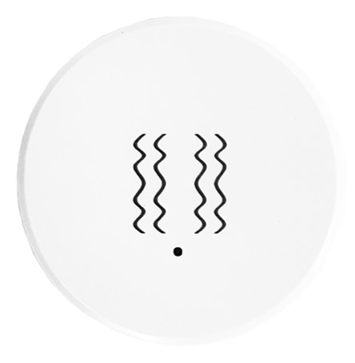
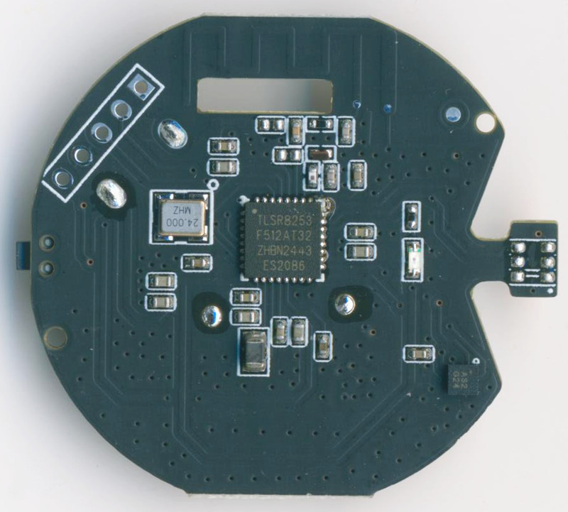
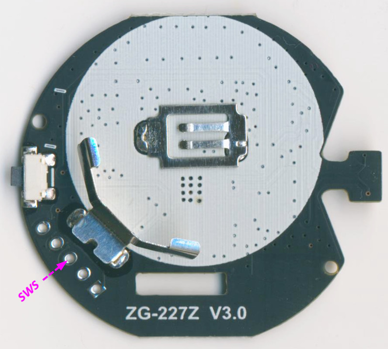
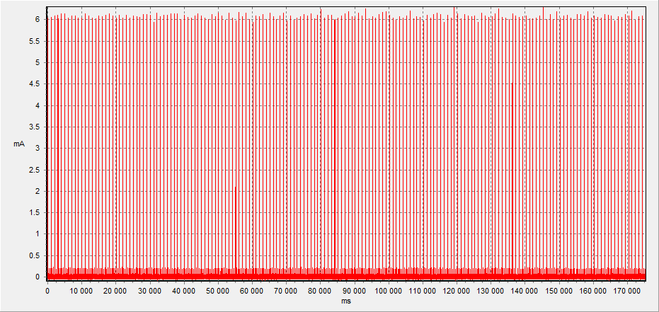

ZG-103Z
(TS0601_TZE200_iba1ckek): Tuya ZigBee Vibration Sensors
SoC: TLSR8253, gSensor: MSA311 (Mark: AS2 G24), Battery: CR2450
Custom firmware
BLE
,
Zigbee
Original FullFlash bin
Original Zigbee OTA

 
Original Power Consumption (Average 21.35 uA):
